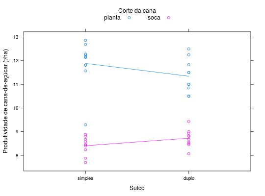
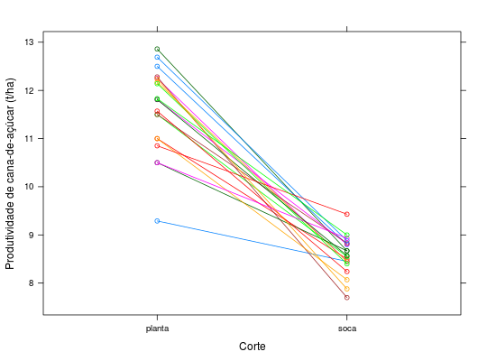

Produtividade de cana-de-açúcar, cultivar CB-43-5,
obtidos de dois sistemas de plantio nos dois primeiros cortes
(cana planta e cana soca) em um ensaio de parcelas subdivididas
em delineamento inteiramente casualizado. Os níveis de sistema de
plantio (sulc) são aleatorizados às parcelas, segundo um
delineamento inteiramente casualizado, portanto este é o fator da
parcela. O corte é o fator da subparcela porque são medidas
repetidas (no tempo, inclusive) na mesma unidade experimental.
Um data.frame com 40 observações e 4 variáveis, em que
cortsulcreptprodBARBIN (2013), Exercício 16, pág. 208.
library(lattice) data(BarbinEx16)#> Warning: data set ‘BarbinEx16’ not foundstr(BarbinEx16)#> 'data.frame': 40 obs. of 4 variables: #> $ cort: Factor w/ 2 levels "planta","soca": 1 1 1 1 1 1 1 1 1 1 ... #> $ sulc: Factor w/ 2 levels "simples","duplo": 1 1 1 1 1 1 1 1 1 1 ... #> $ rept: int 1 2 3 4 5 6 7 8 9 10 ... #> $ prod: num 9.29 12.86 12.17 12.28 11.81 ...xyplot(prod ~ sulc, groups = cort, data = BarbinEx16, type = c("p", "a"), xlab = "Sulco", ylab = "Produtividade de cana-de-açúcar (t/ha)", auto.key = list(columns = 2, cex.title = 1, title = "Corte da cana"))xyplot(prod ~ cort, groups = interaction(sulc, rept), data = BarbinEx16, type = "b", xlab = "Corte", ylab = "Produtividade de cana-de-açúcar (t/ha)")